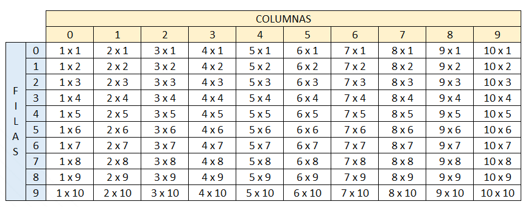

4. Dada la siguiente matriz bidimensional, el cual debe de quemar en el código
Utilizando el conocimiento adquirido, a excepción de hacerlo de forma manual, imprima la siguiente matriz bidimensional.
Proceso Punto_cuatro
Definir fila,columna,r1,r2,r3,r4,r5 como entero;
Definir matriz Como caracter;
Dimension matriz[4,5];
matriz[0,0]<-"01";
matriz[0,1]<-"02";
matriz[0,2]<-"03";
matriz[0,3]<-"04";
matriz[0,4]<-"05";
matriz[1,0]<-"06";
matriz[1,1]<-"07";
matriz[1,2]<-"08";
matriz[1,3]<-"09";
matriz[1,4]<-"10";
matriz[2,0]<-"11";
matriz[2,1]<-"12";
matriz[2,2]<-"13";
matriz[2,3]<-"14";
matriz[2,4]<-"15";
matriz[3,0]<-"16";
matriz[3,1]<-"17";
matriz[3,2]<-"18";
matriz[3,3]<-"19";
matriz[3,4]<-"20";
para fila<-0 hasta 3 con paso 1 Hacer
para columna<-0 hasta 4 Con Paso 1 Hacer
escribir " ",matriz[fila,columna]," " Sin Saltar;
FinPara
Escribir "";
FinPara
Escribir "Matriz Inversa";
para fila<-0 hasta 3 con paso 1 Hacer
Si fila=0 Entonces
para columna<-0 hasta 4 con paso 1 Hacer
escribir " ",matriz[fila,columna]," " Sin Saltar;
FinPara
Escribir "";
FinSi
Si fila=1 Entonces
columna<-4;
para r1<-0 hasta 4 con paso 1 Hacer
Escribir " ",matriz[fila,columna]," " Sin Saltar;
columna<-columna-1;
FinPara
Escribir "";
FinSi
Si fila=2 Entonces
columna<-4;
para r1<-0 hasta 4 con paso 1 Hacer
Escribir " ",matriz[fila,columna]," " Sin Saltar;
columna<-columna-1;
FinPara
Escribir "";
FinSi
Si fila=3 Entonces
columna<-4;
para r1<-0 hasta 4 con paso 1 Hacer
Escribir " ",matriz[fila,columna]," " Sin Saltar;
columna<-columna-1;
FinPara
Escribir "";
FinSi
FinPara
FinProceso
5. Se debe de imprimir el siguiente cuadro

El usuario deberá insertar la fila y columna de la cual desea ver el resultado, el resultado de cada celda debe estar previamente calculado en una matriz bidimensional la cual cada resultado obedecerá a la fila y columna insertada por el usuario.
Proceso Punto_quinto
Definir fila,columna,contfila,contcolumna,fila_consultar,columna_consultar,buscar_fila,buscar_columna,i como entero;
Definir matriz Como entero;
definir matrizcar Como Caracter;
Dimension matriz[10,10];
Dimension matrizcar[10,10];
matriz[0,0]<-1*1;
matriz[0,1]<-2*1;
matriz[0,2]<-3*1;
matriz[0,3]<-4*1;
matriz[0,4]<-5*1;
matriz[0,5]<-6*1;
matriz[0,6]<-7*1;
matriz[0,7]<-8*1;
matriz[0,8]<-9*1;
matriz[0,9]<-10*1;
matriz[1,0]<-1*2;
matriz[1,1]<-2*2;
matriz[1,2]<-3*2;
matriz[1,3]<-4*2;
matriz[1,4]<-5*2;
matriz[1,5]<-6*2;
matriz[1,6]<-7*2;
matriz[1,7]<-8*2;
matriz[1,8]<-9*2;
matriz[1,9]<-10*2;
matriz[2,0]<-1*3;
matriz[2,1]<-2*3;
matriz[2,2]<-3*3;
matriz[2,3]<-4*3;
matriz[2,4]<-5*3;
matriz[2,5]<-6*3;
matriz[2,6]<-7*3;
matriz[2,7]<-8*3;
matriz[2,8]<-9*3;
matriz[2,9]<-10*3;
matriz[3,0]<-1*4;
matriz[3,1]<-2*4;
matriz[3,2]<-3*4;
matriz[3,3]<-4*4;
matriz[3,4]<-5*4;
matriz[3,5]<-6*4;
matriz[3,6]<-7*4;
matriz[3,7]<-8*4;
matriz[3,8]<-9*4;
matriz[3,9]<-10*4;
matriz[4,0]<-1*5;
matriz[4,1]<-2*5;
matriz[4,2]<-3*5;
matriz[4,3]<-4*5;
matriz[4,4]<-5*5;
matriz[4,5]<-6*5;
matriz[4,6]<-7*5;
matriz[4,7]<-8*5;
matriz[4,8]<-9*5;
matriz[4,9]<-10*5;
matriz[5,0]<-1*6;
matriz[5,1]<-2*6;
matriz[5,2]<-3*6;
matriz[5,3]<-4*6;
matriz[5,4]<-5*6;
matriz[5,5]<-6*6;
matriz[5,6]<-7*6;
matriz[5,7]<-8*6;
matriz[5,8]<-9*6;
matriz[5,9]<-10*6;
matriz[6,0]<-1*7;
matriz[6,1]<-2*7;
matriz[6,2]<-3*7;
matriz[6,3]<-4*7;
matriz[6,4]<-5*7;
matriz[6,5]<-6*7;
matriz[6,6]<-7*7;
matriz[6,7]<-8*7;
matriz[6,8]<-9*7;
matriz[6,9]<-10*7;
matriz[7,0]<-1*8;
matriz[7,1]<-2*8;
matriz[7,2]<-3*8;
matriz[7,3]<-4*8;
matriz[7,4]<-5*8;
matriz[7,5]<-6*8;
matriz[7,6]<-7*8;
matriz[7,7]<-8*8;
matriz[7,8]<-9*8;
matriz[7,9]<-10*8;
matriz[8,0]<-1*9;
matriz[8,1]<-2*9;
matriz[8,2]<-3*9;
matriz[8,3]<-4*9;
matriz[8,4]<-5*9;
matriz[8,5]<-6*9;
matriz[8,6]<-7*9;
matriz[8,7]<-8*9;
matriz[8,8]<-9*9;
matriz[8,9]<-10*9;
matriz[9,0]<-1*10;
matriz[9,1]<-2*10;
matriz[9,2]<-3*10;
matriz[9,3]<-4*10;
matriz[9,4]<-5*10;
matriz[9,5]<-6*10;
matriz[9,6]<-7*10;
matriz[9,7]<-8*10;
matriz[9,8]<-9*10;
matriz[9,9]<-10*10;
matrizcar[0,0]<-"1*1 ";
matrizcar[0,1]<-" 2*1 ";
matrizcar[0,2]<-" 3*1 ";
matrizcar[0,3]<-" 4*1 ";
matrizcar[0,4]<-" 5*1 ";
matrizcar[0,5]<-" 6*1 ";
matrizcar[0,6]<-" 7*1 ";
matrizcar[0,7]<-" 8*1 ";
matrizcar[0,8]<-" 9*1 ";
matrizcar[0,9]<-" 10*1";
matrizcar[1,0]<-"1*2 ";
matrizcar[1,1]<-" 2*2 ";
matrizcar[1,2]<-" 3*2 ";
matrizcar[1,3]<-" 4*2 ";
matrizcar[1,4]<-" 5*2 ";
matrizcar[1,5]<-" 6*2 ";
matrizcar[1,6]<-" 7*2 ";
matrizcar[1,7]<-" 8*2 ";
matrizcar[1,8]<-" 9*2 ";
matrizcar[1,9]<-" 10*2";
matrizcar[2,0]<-"1*3 ";
matrizcar[2,1]<-" 2*3 ";
matrizcar[2,2]<-" 3*3 ";
matrizcar[2,3]<-" 4*3 ";
matrizcar[2,4]<-" 5*3 ";
matrizcar[2,5]<-" 6*3 ";
matrizcar[2,6]<-" 7*3 ";
matrizcar[2,7]<-" 8*3 ";
matrizcar[2,8]<-" 9*3 ";
matrizcar[2,9]<-" 10*3";
matrizcar[3,0]<-"1*4 ";
matrizcar[3,1]<-" 2*4 ";
matrizcar[3,2]<-" 3*4 ";
matrizcar[3,3]<-" 4*4 ";
matrizcar[3,4]<-" 5*4 ";
matrizcar[3,5]<-" 6*4 ";
matrizcar[3,6]<-" 7*4 ";
matrizcar[3,7]<-" 8*4 ";
matrizcar[3,8]<-" 9*4 ";
matrizcar[3,9]<-" 10*4";
matrizcar[4,0]<-"1*5 ";
matrizcar[4,1]<-" 2*5 ";
matrizcar[4,2]<-" 3*5 ";
matrizcar[4,3]<-" 4*5 ";
matrizcar[4,4]<-" 5*5 ";
matrizcar[4,5]<-" 6*5 ";
matrizcar[4,6]<-" 7*5 ";
matrizcar[4,7]<-" 8*5 ";
matrizcar[4,8]<-" 9*5 ";
matrizcar[4,9]<-" 10*5";
matrizcar[5,0]<-"1*6 ";
matrizcar[5,1]<-" 2*6 ";
matrizcar[5,2]<-" 3*6 ";
matrizcar[5,3]<-" 4*6 ";
matrizcar[5,4]<-" 5*6 ";
matrizcar[5,5]<-" 6*6 ";
matrizcar[5,6]<-" 7*6 ";
matrizcar[5,7]<-" 8*6 ";
matrizcar[5,8]<-" 9*6 ";
matrizcar[5,9]<-" 10*6";
matrizcar[6,0]<-"1*7 ";
matrizcar[6,1]<-" 2*7 ";
matrizcar[6,2]<-" 3*7 ";
matrizcar[6,3]<-" 4*7 ";
matrizcar[6,4]<-" 5*7 ";
matrizcar[6,5]<-" 6*7 ";
matrizcar[6,6]<-" 7*7 ";
matrizcar[6,7]<-" 8*7 ";
matrizcar[6,8]<-" 9*7 ";
matrizcar[6,9]<-" 10*7";
matrizcar[7,0]<-"1*8 ";
matrizcar[7,1]<-" 2*8 ";
matrizcar[7,2]<-" 3*8 ";
matrizcar[7,3]<-" 4*8 ";
matrizcar[7,4]<-" 5*8 ";
matrizcar[7,5]<-" 6*8 ";
matrizcar[7,6]<-" 7*8 ";
matrizcar[7,7]<-" 8*8 ";
matrizcar[7,8]<-" 9*8 ";
matrizcar[7,9]<-" 10*8";
matrizcar[8,0]<-"1*9 ";
matrizcar[8,1]<-" 2*9 ";
matrizcar[8,2]<-" 3*9 ";
matrizcar[8,3]<-" 4*9 ";
matrizcar[8,4]<-" 5*9 ";
matrizcar[8,5]<-" 6*9 ";
matrizcar[8,6]<-" 7*9 ";
matrizcar[8,7]<-" 8*9 ";
matrizcar[8,8]<-" 9*9 ";
matrizcar[8,9]<-" 10*9";
matrizcar[9,0]<-"1*10 ";
matrizcar[9,1]<-"2*10 ";
matrizcar[9,2]<-"3*10 ";
matrizcar[9,3]<-"4*10 ";
matrizcar[9,4]<-"5*10 ";
matrizcar[9,5]<-"6*10 ";
matrizcar[9,6]<-"7*10 ";
matrizcar[9,7]<-"8*10 ";
matrizcar[9,8]<-"9*10 ";
matrizcar[9,9]<-"10*10";
para contcolumna<-0 Hasta 9 con paso 1 Hacer
escribir " ",contcolumna," " Sin Saltar;
FinPara
Escribir "";
contfila<-0;
para fila<-0 hasta 9 con paso 1 Hacer
Escribir contfila Sin Saltar;
para columna<-0 hasta 9 Con Paso 1 Hacer
escribir " ",matrizcar[fila,columna]," " Sin Saltar;
FinPara
Escribir "";
contfila<- contfila+1;
FinPara
i<-0;
mientras i=0 Hacer
Escribir "Ingresa los valores a consultar ";
Escribir "Ingresa la FILA a consular :" Sin Saltar;
leer fila_consultar;
Escribir "Ingresa la COLUMNA a consultar :"Sin Saltar;
leer columna_consultar;
Si fila_consultar<=9 & columna_consultar<=9 Entonces
Escribir "La posicion a consultar es [ ",fila_consultar," , ",columna_consultar," ]";
para buscar_fila<-0 hasta 9 Con Paso 1 Hacer
Para buscar_columna<-0 hasta 9 Con Paso 1 Hacer
si buscar_fila=fila_consultar & buscar_columna=columna_consultar Entonces
Escribir "El resultado de la posicion es ",matriz[buscar_fila,buscar_columna];
FinSi
FinPara
FinPara
i<-i+1;
SiNo
Escribir "posicion ingresada incorrecta vuelve a intentarlo";
i<-0;
Esperar Tecla;
FinSi
FinMientras
FinProceso